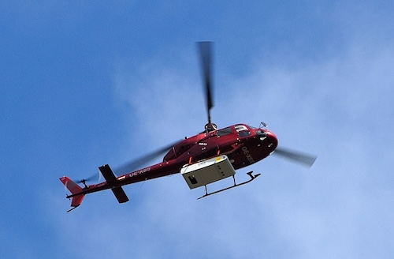

Airborne Laser Scanning (ALS), auch bekannt als LiDAR (Light Detection and Ranging), ist ein fernerkundungsbasiertes Verfahren zur hochpräzisen dreidimensionalen Erfassung der Erdoberfläche. Dabei sendet ein auf einem Flugzeug, Hubschrauber oder einer Drohne montierter Laserscanner Laserimpulse in Richtung Boden aus. Die Zeit, die diese Impulse für den Weg zum Objekt und zurück zum Sensor benötigen, wird gemessen, um Entfernungen zu berechnen. In Kombination mit GPS-Daten zur Positionsbestimmung und einem Inertialmesssystem (INS) zur Erfassung der Fluglage entstehen so präzise 3D-Punktwolken der gescannten Oberfläche.
Das Foto von Peter Haas (CC BY-SA 3.0, Wikimedia Commons) zeigt einen Helikopter mit Airborne Laser Scanning Ausrüstung.
Die aus diesen Rohdaten gewonnenen Informationen sind vielfältig nutzbar, beispielsweise zur Erstellung von digitalen Geländemodellen, zur Analyse von Vegetationshöhen oder zur Erfassung von Gebäudestrukturen. Allerdings ist die Nachbearbeitung der Rohdaten ein wichtiger und oft aufwendiger Schritt. Dieser Prozess beinhaltet unter anderem die Filterung von Fehlmessungen, die Klassifizierung der Punkte (z.B. Boden, Vegetation, Gebäude) und die Georeferenzierung, um die Daten exakt zu verorten. Die Komplexität der Daten und die Notwendigkeit, präzise Ergebnisse zu erzielen, machen diese Nachbearbeitung zu einem anspruchsvollen Teil des ALS-Verfahrens. Trotzdem hat sich ALS aufgrund seiner Fähigkeit, auch unter Vegetationsbedeckung detaillierte Geländedaten zu liefern, in vielen Bereichen wie der Forstwirtschaft, Archäologie, Stadtplanung und dem Umweltmonitoring etabliert.
Die Bundesländer streben die Einhaltung folgender Kriterien an:
Das DGM1 in Deutschland bietet eine hohe absolute Höhengenauigkeit, die typischerweise im Bereich von ±15 cm bis ±30 cm liegt, abhängig von der Geländebeschaffenheit. Die absolute Lagegenauigkeit der Rohdaten (Laserscans) liegt oft bei ≤ 30 cm.
Die Hersteller von LiDAR-Systemen geben für aktuelle Scanner und unter optimalen Bedingungen, Genauigkeiten von 2-5 cm vertikal (Höhe) und 5-10 cm horizontal (Lage) an. Wenn Bundesländer neue Befliegungen beauftragen, werden Genauigkeitsanforderungen spezifiziert, die oft in diesem Rahmen liegen.
Die relative Genauigkeit benachbarter Punkte, sowohl in Höhe als auch in Lage, wird allgemein als wesentlich höher eingeschätzt, da sich systematische Fehler hier weniger stark auswirken. Die relative Genauigkeit lässt sich beispielsweise selbst beurteilen, indem man die Höhenwerte für die Laufbahn einer offenen Sportanlage ermittelt. Bei einer planen Laufbahn sollten sich nur sehr geringe Höhenunterschiede ergeben.
Details zu einem Punkt.
Das Application Programming Interface (API) gibt die Höhendaten als unveränderte Gleitkommazahl an den Aufrufer zurück. Beispiel: 53.62300109863281 Meter.
Um keine Scheingenauigkeit zu suggerieren, werden die Höhenangaben auf Zentimeter gerundet. Beispiel: 53.62 Meter. Das Gleiche gilt für die Lageangaben in Lon/Lat-Koordinaten, die mit einer Genauigkeit von jeweils 7 Nachkommastellen ausgegeben werden. Dies entspricht in Deutschland in etwa einer Genauigkeit von einem Zentimeter.
Die Höhendaten werden von den Landesvermessungsämtern der Bundesländer zur Verfügung gestellt. In der Regel werden sie als 1x1km-Kacheln im GeoTIFF-Format und stets in UTM-Projektion bereitgestellt. Die Quelldaten werden inhaltlich nicht verändert. Für einzelne Bundesländer sind jedoch Formatumwandlungen (XYZ -> GeoTIFF) oder Umkachelungen (2x2km -> 1x1km) erforderlich. Auch das Benennungsschema der Quelldaten wird nicht geändert. Über einen einheitlichen, zusätzlichen Kachelindex (zone_easting_northing) kann jede Kachel schnell gefunden werden. Jedes Bundesland ordnet sein Verwaltungsgebiet logisch einer UTM-Zone zu. Daraus ergeben sich, homogen innerhalb eines Bundeslandes, Kacheln in den UTM-Zonen 32 oder 33. Kacheln, die Gebiete mehrerer Bundesländer abdecken, werden von allen betroffenen Bundesländern (zwei oder drei) bereitgestellt. Messpunkte jenseits der Bundeslandgrenze werden in der Regel mit NoData-Werten (meist -9999) gefüllt.
Details zu einer Strecke.
Im Zusammenhang mit DGM1-Höhendaten finden sich für viele Aspekte im Internet keine oder nur wenige Referenzinformationen. Aus diesem Grund wäre eine kritische Betrachtung aller Sachverhalte wünschenswert. Wir freuen uns auf Feedback. Auch zum Beispiel zur konkreten Nutzung der Höhendaten, der verfügbaren Dienste oder der API-Funktionen.
© 2025 - Höhendaten für Deutschland